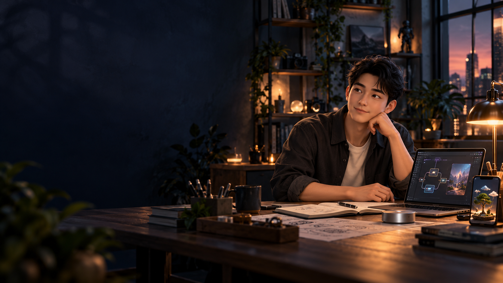

MEDICAL DEVICES
医疗器械
产品经理经历
围绕心肺复苏、呼吸机与气道管理相关方向，参与用户需求、产品定义与产品导入工作。

PRODUCT BUILDER · AI EXPLORER
你好，我是 Leo，Mixture X 创始人。
从产品到 AI，从数字世界到实体体验，
我喜欢探索，也喜欢把东西做出来。
01 SELECTED WORK
把探索留在作品里。AI 产品、智能助手与视觉创作。
每个方向，都从一个具体的问题开始。
这里展示项目方向与设计探索。点击作品，了解项目背景与已形成的内容。
02 PROFESSIONAL EXPERIENCE
真实行业里的产品积累。生物医学工程背景，跨医疗器械、消费电子与无线通信的产品经历，让我习惯从使用场景出发，理解一个产品为什么值得做。
MEDICAL DEVICES
产品经理经历
围绕心肺复苏、呼吸机与气道管理相关方向，参与用户需求、产品定义与产品导入工作。
CONSUMER ELECTRONICS · FIRST UNION
产品经理经历
关注国内产品与海外 OEM / ODM 需求，将使用场景、客户需求和产品落地连接起来。
WIRELESS COMMUNICATION · RETEVIS
OEM / ODM 产品经历
围绕对讲机、无线配件与海外市场，参与市场研究、产品定义和客户需求梳理。
03 MY APPROACH
产品判断、AI 实践与跨行业经验，
在具体项目里彼此连接。
先理解谁需要、为什么需要，再决定做什么。IP 增长智能体从业务需求与增长场景展开。
既看数字体验，也看真实使用环境。录音豆的设计把设备、交流记忆与后续行动接起来。
用产品方案、原型和视觉作品，把抽象想法变成可以讨论、可以继续验证的东西。
04 LET’S BUILD SOMETHING
AI 产品共创 · 智能硬件探索 · AIGC 创作合作
647683112@qq.com